От текущего интерфейса к понятному первому запуску
Восемь основных направлений улучшения и один предварительный концепт установки. В каждой карточке — фактический экран Суфлёра, ориентир Chatbase и предлагаемый дизайн для решения владельца.
Playwright 1.64.1Chromium 156.0.8078.470 публичных состояний8 состояний пустого кабинетаПриложение не изменялось
Что является доказательством: живые публичные экраны и пустой тестовый кабинет Суфлёра.
Что воспроизведено: прогресс, ошибки и ответы — на настоящем frontend, но с подменой данных только в браузере. Индексация и вызовы моделей Суфлёра не запускались.
Что является ориентиром: главная, тарифы и вход Chatbase сняты живыми. Его закрытые экраны — иллюстрации официальной документации; дата исходных изображений не указана издателем.
Как читать «будет»: это согласуемые концепты, а не обещание уже реализованных функций. В U09 текущий экран установки не исследован.
Превратить пустой кабинет в короткий первый запуск
03 / 09
Как сейчас
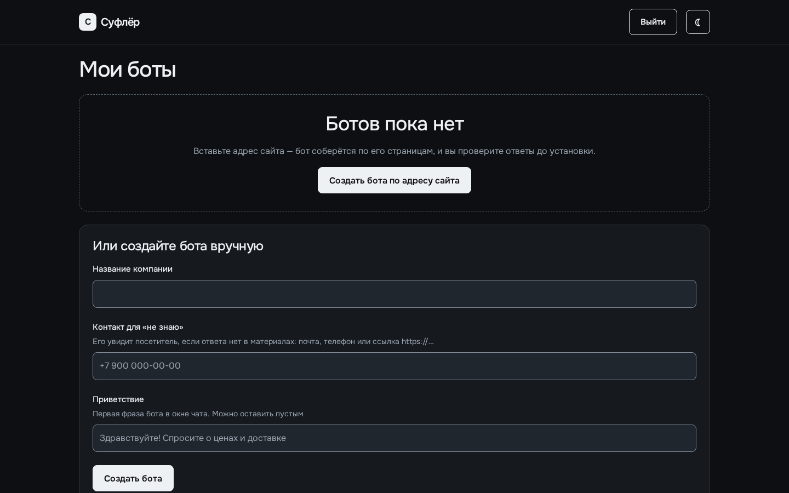
Живой кабинет предоставленного тестового аккаунта
В пустом кабинете одновременно показаны путь через сайт и полная форма ручного создания. Пользователь выбирает способ и заполняет дополнительные сведения до знакомства с материалами.
Как в Chatbase
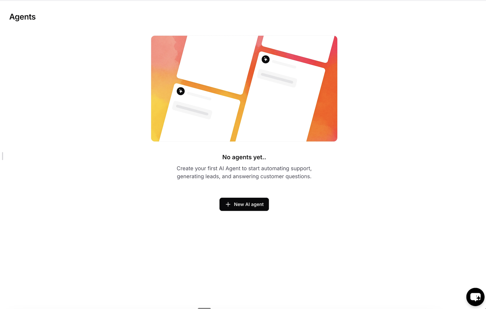
Иллюстрация официальной документации Chatbase
На иллюстрации Chatbase есть явное действие создания агента; дальнейшие шаги описаны последовательно.
Предлагаемый вариант
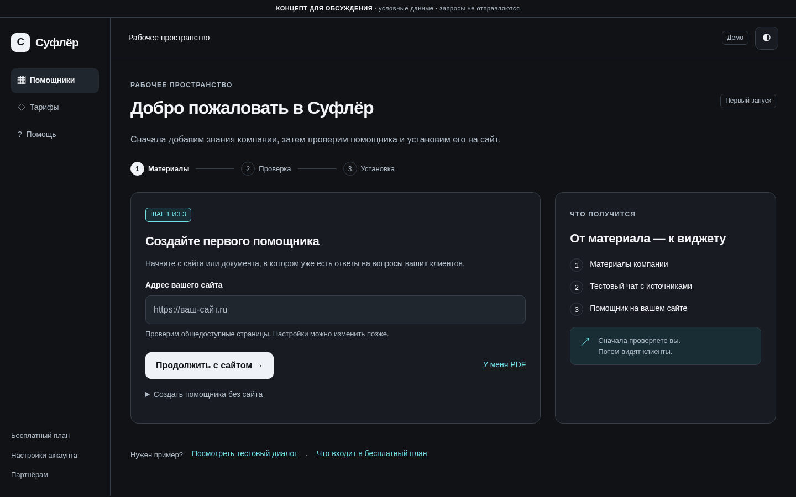
КОНЦЕПТ · не внедрено в приложение
Один основной старт с источника и видимый путь «Материалы → Проверка → Установка». Ручной способ раскрывать по запросу.
Как принять результат будущей реализации
Владелец без подсказки называет текущий и следующий шаг. Для старта с сайтом на основном экране одно поле; альтернативный путь доступен явно.
Что потребуется
UI + навигация. Переход к разработке — после решения владельца.
На форме нет видимого пути восстановления пароля и переключателя его видимости. Вход по действующему паролю проверен успешно.
Как в Chatbase
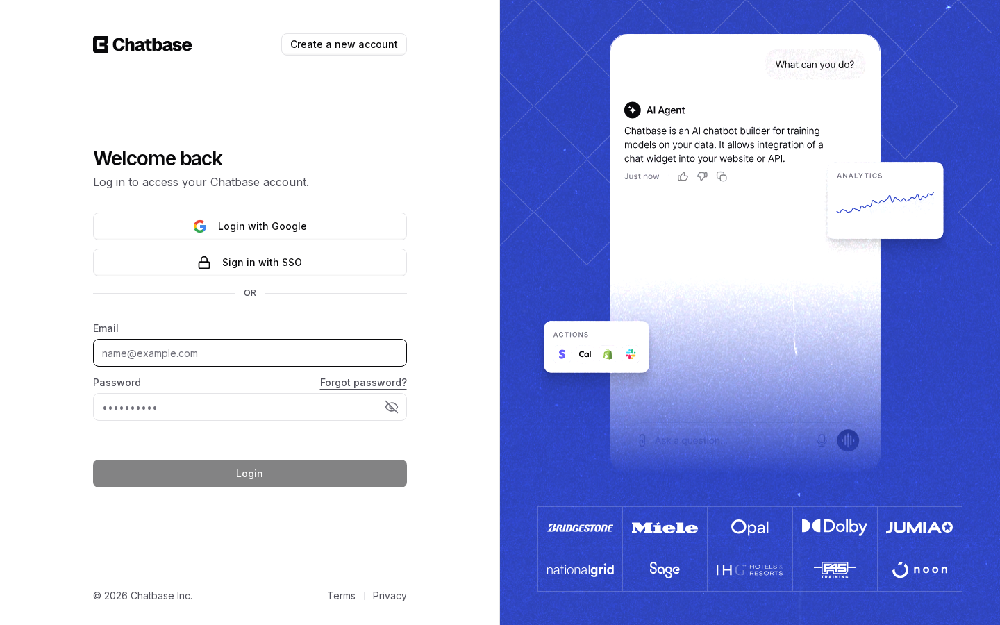
Живой публичный экран Chatbase
В Chatbase на экране входа видны восстановление пароля и управление его видимостью.
Предлагаемый вариант
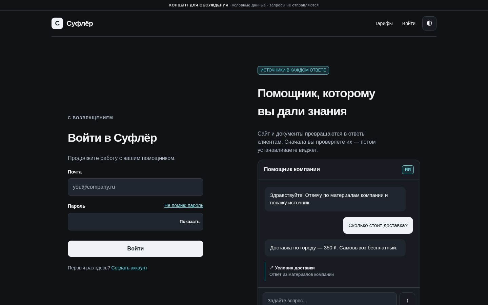
КОНЦЕПТ · не внедрено в приложение
Добавить «Не помню пароль» и «Показать / Скрыть». Сохранить простой вход по почте; восстановление проектировать как полный серверный сценарий с письмом.
Как принять результат будущей реализации
Видимость управляется с клавиатуры и отражается в aria-pressed. Восстановление показывает отдельные успех и ошибку и не ограничивается декоративной ссылкой.
Что потребуется
Переключатель — UI; восстановление — API + письмо. Переход к разработке — после решения владельца.
Названия «Без бейджа» и «Студия» требуют понимания терминов. Обоснование отметки «Чаще выбирают» этим аудитом не проверялось.
Как в Chatbase
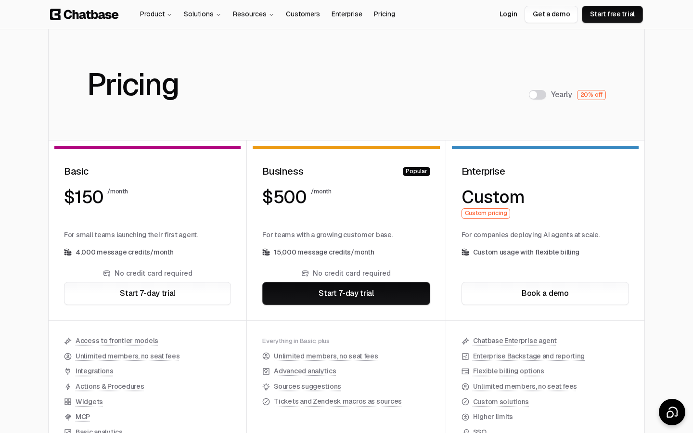
Живой публичный экран Chatbase
Карточки Chatbase поясняют, для какого типа команды предназначен план.
Предлагаемый вариант
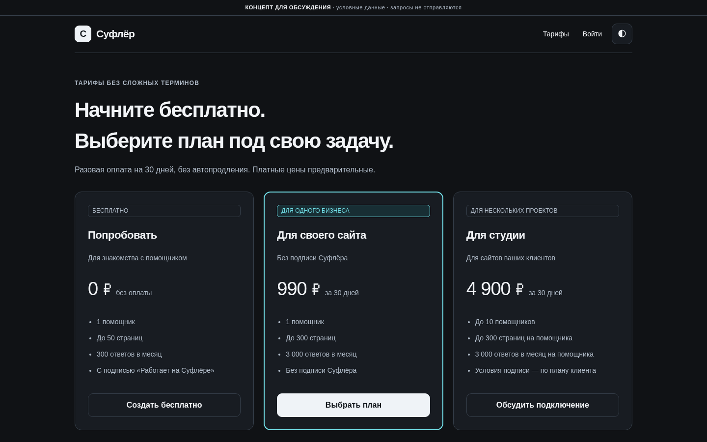
КОНЦЕПТ · не внедрено в приложение
Назвать задачи: «Попробовать», «Для своего сайта», «Для студии». Объяснить подпись простыми словами, сохранить реальные цены, лимиты, предварительность и оплату на 30 дней.
Как принять результат будущей реализации
В пяти пользовательских сессиях проверить понимание различий и условий; целевой результат определить до теста. Цены и возможности не меняются ради дизайна.
Что потребуется
UI и тексты; продуктовая сверка условий. Переход к разработке — после решения владельца.
U06P1UX-несогласованность в воспроизведённом состоянии
Из ошибки вести к выполнимому действию
06 / 09
Как сейчас
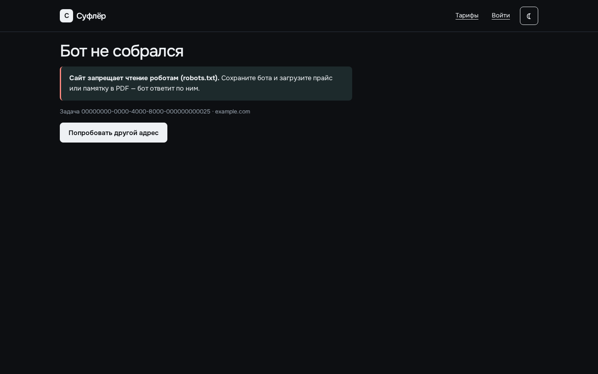
Настоящий frontend; состояние failed подменено в браузере
При robots_disallowed текст предлагает сохранить бота и загрузить PDF, но единственная кнопка — «Попробовать другой адрес». Прямого перехода к предложенному PDF на экране нет.
Как в Chatbase
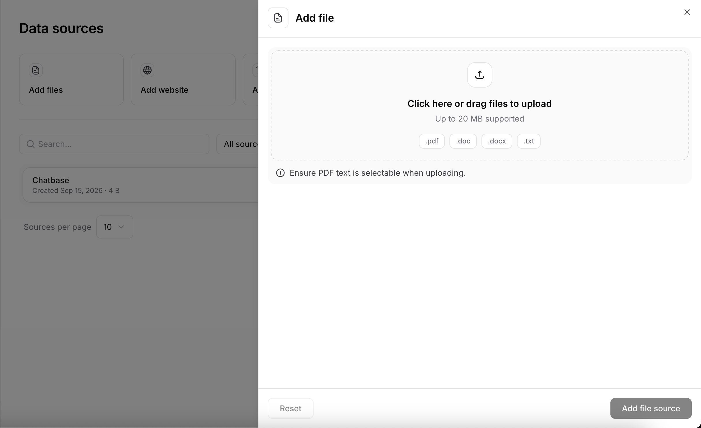
Иллюстрация официальной документации Chatbase
В документации Chatbase показан отдельный выбор и диалог загрузки файла.
Предлагаемый вариант
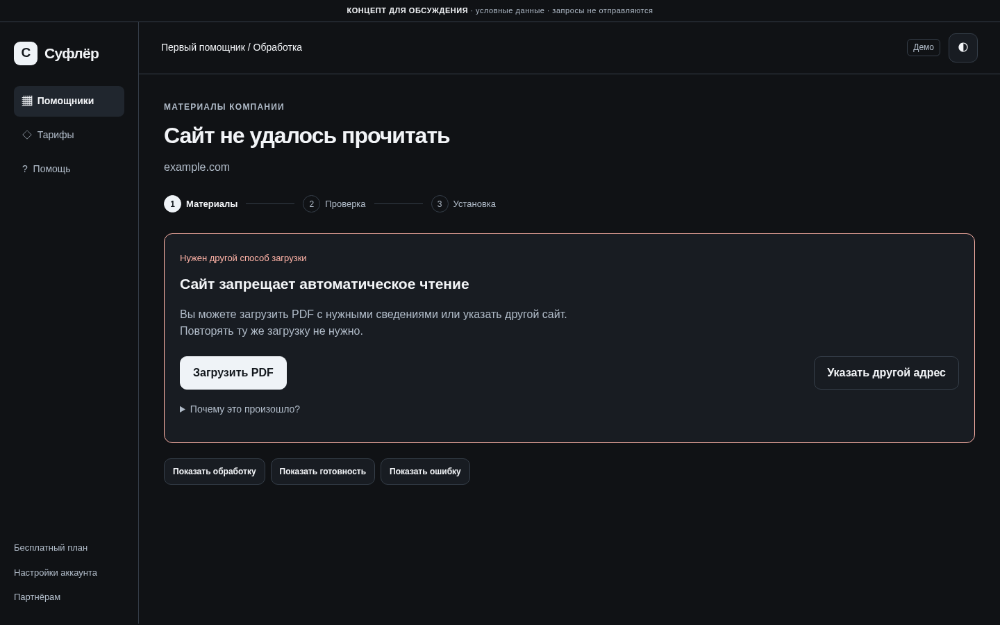
КОНЦЕПТ · не внедрено в приложение
Дать два конкретных выхода: PDF и другой адрес. Объяснить необходимость входа для PDF, сохранить введённый адрес; технический ID убрать из основного сообщения.
Как принять результат будущей реализации
Из ошибочного состояния можно перейти к PDF по видимому действию. Проверить последовательность с входом и обратным переходом; не обещать сохранение несуществующего бота.
Что потребуется
UI + маршрутизация; проверить условия сохранения. Переход к разработке — после решения владельца.
Настоящий frontend; ответ и источник подменены в браузере
После первого ответа в ленте появляются сохранение и публикация ссылки. Источник уже виден — это сильная сторона, которую важно сохранить.
Как в Chatbase
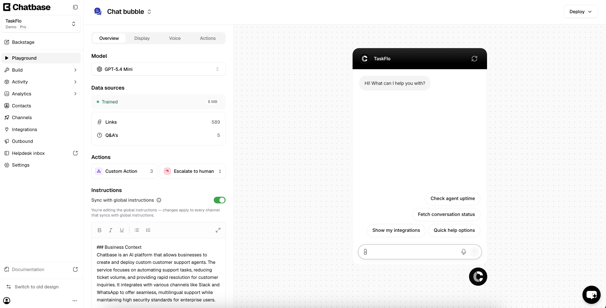
Иллюстрация официальной документации Chatbase
Playground визуально отделяет рабочие настройки, предпросмотр и действие установки; документация рекомендует проверять и вопросы вне базы.
Предлагаемый вариант
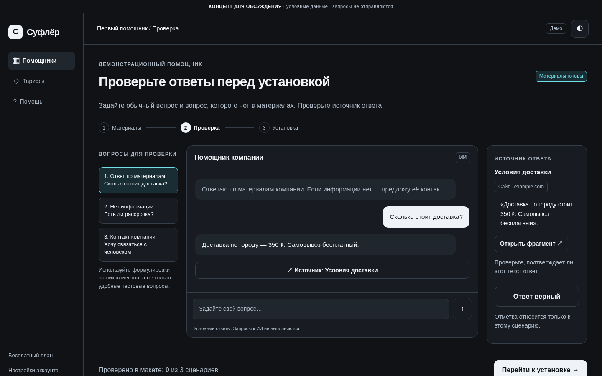
КОНЦЕПТ · не внедрено в приложение
Проверка по короткому списку: обычный вопрос, нехватка данных, контакт человека. Источник вынести в соседнюю панель; переход к установке — отдельно от сообщения.
Как принять результат будущей реализации
Можно проверить фрагмент и не потерять вопрос. Повторная отметка того же сценария не увеличивает счётчик. Чек-лист не означает гарантии качества всех ответов.
Что потребуется
UI; сохранение списка проверок потребует отдельного решения. Переход к разработке — после решения владельца.
На 320×568 кнопка создания находится на y=691…739, ниже первого экрана. На 375×667 и 390×844 основное действие уже помещается — общей поломки мобильной версии нет.
Как в Chatbase
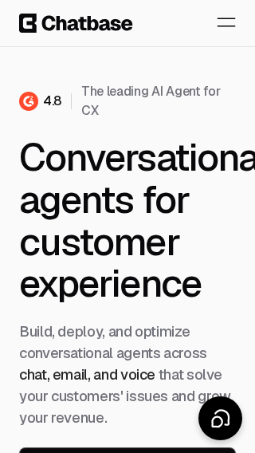
Живой публичный Chatbase, тот же viewport 320×568
На том же viewport кнопка Chatbase расположена на y=561…609 и тоже видна не полностью. Композиционный ориентир требует адаптации под нашу цель.
Предлагаемый вариант
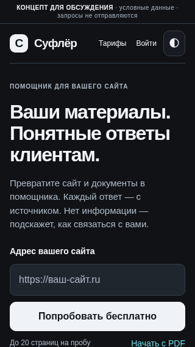
КОНЦЕПТ · не внедрено в приложение
Сократить первый экран, сохранить подпись поля и явную PDF-альтернативу. В макете на 320×568 кнопка расположена на y=494…542.
Как принять результат будущей реализации
Поле и основная кнопка полностью доступны в первом экране 320×568; нет горизонтальной прокрутки, поля не меньше 16 px, клавиатурный фокус видим.
Что потребуется
UI и тексты. Переход к разработке — после решения владельца.
Последний проверенный переход; сам экран установки не исследован
В предоставленном аккаунте нет ботов. Текущий заполненный кабинет и установка не проверены; отсутствие каких-либо функций не утверждается.
Как в Chatbase
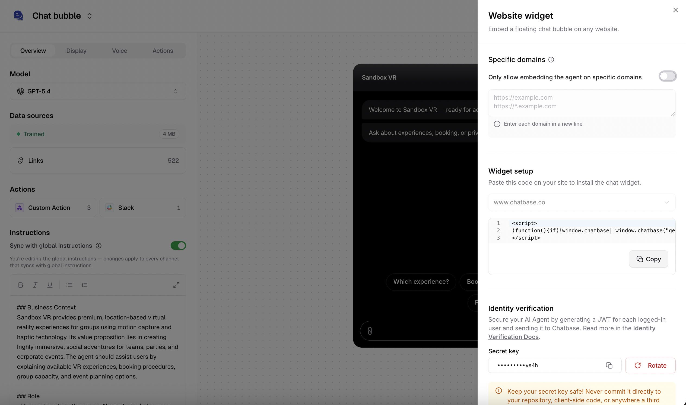
Иллюстрация официальной документации Chatbase
Инструкция Chatbase разделяет копирование embed-кода и проверку виджета на настоящем сайте.
Предлагаемый вариант
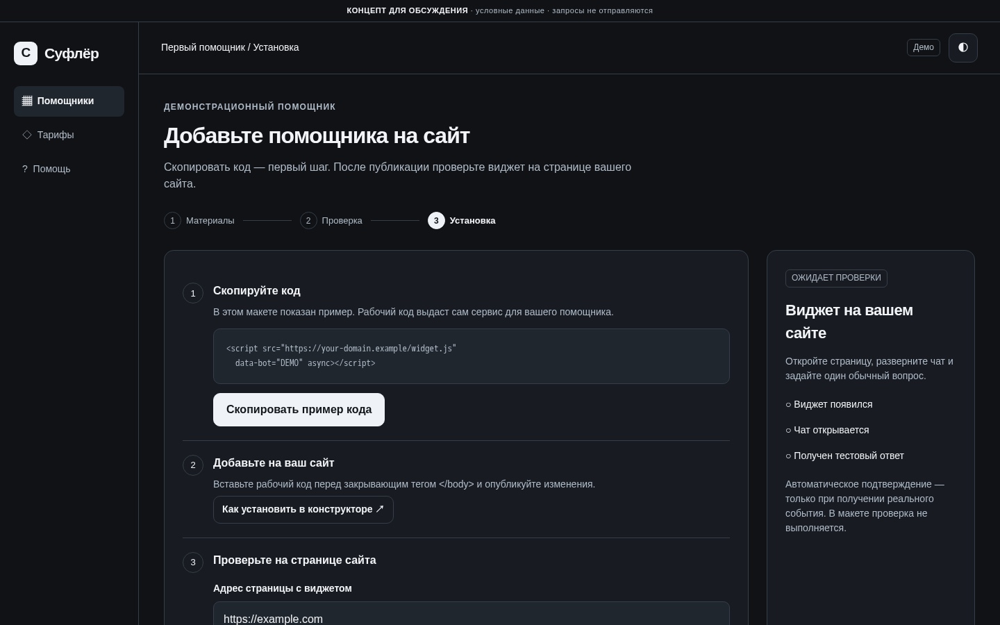
КОНЦЕПТ · не внедрено в приложение
Собрать установку в три шага и отделить «код скопирован» от «виджет работает». Это кандидат для сверки после появления тестового бота, не готовое требование переделки.
Как принять результат будущей реализации
Сперва проверить текущий экран с тестовым ботом. Подтверждать установку только реальным событием или явно обозначенной ручной проверкой.
Что потребуется
Сначала дополнительный аудит; затем оценка. Переход к разработке — после решения владельца.
Проверялся только UI/UX Суфлёра; Chatbase использован как оригинал и сравнительный ориентир. Proofwall в этот аудит не включён.
70 публичных сочетаний: 5 экранов × 2 темы × 7 ширин (320, 360, 390, 414, 768, 1024, 1440). Горизонтального переполнения не найдено. Axe запускался в 20 состояниях; нарушений выбранных автоматических правил не обнаружено.
Пустой авторизованный кабинет проверен в 8 сочетаниях ширины и темы. Новые боты не создавались, данные пользователя не редактировались; из серверных изменений — только сессия входа.
Сценарии предпросмотра воспроизведены через Playwright route.fulfill. Это UI-проверка, не доказательство работы backend и не проверка качества ответов.
Концепты: 32 сочетания экрана, темы и ширины плюс короткий экран 320×568. Проверены переполнение, выбранные правила axe и JS-ошибки. В демонстрации проверены переключение видимости пароля и недублирующийся счётчик сценариев.
Safari/WebKit, реальные телефоны, заполненный кабинет и действующий экран установки не проверялись. Автоматическая доступность не является полной сертификацией WCAG; интервью и тестов с реальными пользователями не было.
Исследовательский рой изучил первый запуск, доверие к ИИ и мобильные формы по первичным источникам. Предложенные критерии приёмки — цели для будущих проверок, не полученные пользовательские результаты.
Сохраняем: работу обеих тем, отсутствие горизонтального скролла на измеренных экранах, видимый источник ответа, честные состояния нехватки информации и понятные подписи полей.